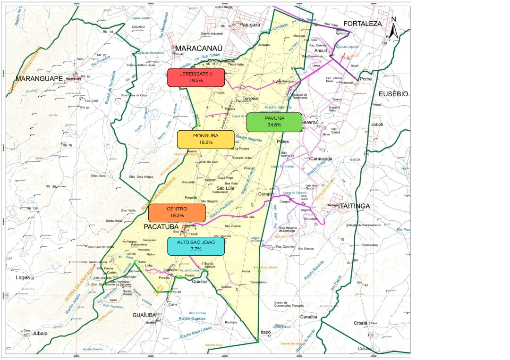

serras secas, mesas vazias
A fome é uma realidade urgente que afeta milhares de famílias em Pacatuba, e este espaço foi criado para dar visibilidade a essa crise silenciosa. Aqui, reunimos informações, dados, depoimentos e iniciativas que buscam entender e combater a insegurança alimentar no município. Nosso objetivo é sensibilizar, informar e mobilizar a sociedade para ações concretas que possam transformar essa realidade. Juntos, podemos construir um futuro com mais dignidade e justiça social para todos os moradores de Pacatuba.
mapa da fome
A seguir, apresentamos um mapa que destaca a localização das instituições de caridade atuantes na região de Pacatuba. Estas organizações desempenham um papel fundamental no apoio a famílias em situação de vulnerabilidade, oferecendo alimentos, assistência social e outras formas de ajuda. Explore o mapa para conhecer essas instituições e entender onde estão concentrados os principais pontos de apoio à população.
preencha nosso formulário
Acreditamos que o combate à fome é uma construção coletiva. Por isso, junto ao Mapa da Fome de Pacatuba, disponibilizamos este formulário para que você possa contribuir com sugestões, ideias e propostas de ações que ajudem a enfrentar a insegurança alimentar na nossa região. Seja você morador, profissional da área, integrante de alguma organização ou apenas alguém que deseja fazer a diferença, sua participação é essencial. Suas sugestões podem servir de base para projetos comunitários, iniciativas governamentais e ações da sociedade civil. Juntos, podemos construir caminhos mais justos e eficazes para garantir o direito à alimentação para todos.
clique aqui para responder